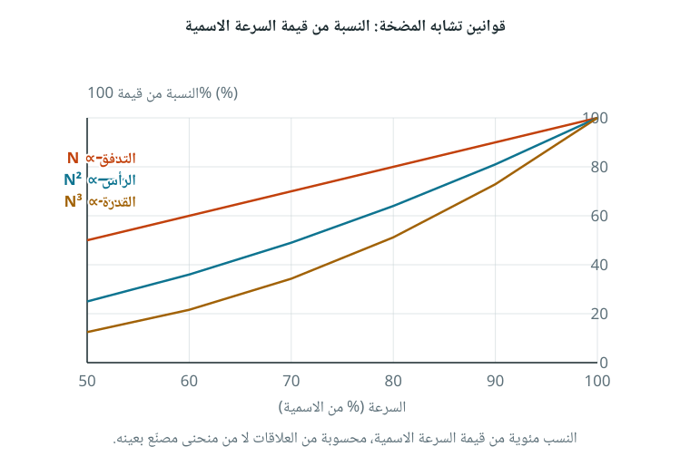

كيف تتغيّر قدرة المضخة عند خفض سرعتها؟
Pump affinity laws: speed down, power down cubically
وفق قوانين التشابه، يؤدي خفض سرعة المضخة إلى 75٪ من سرعتها الأصلية إلى انخفاض القدرة المطلوبة بنحو 58٪ عند نقاط تشغيل متناظرة وبافتراض كفاءة متقاربة.
عندما يضيّق صمام الخنق المجرى، يزيد مقاومة الشبكة. ويمكن أيضًا تغيير التدفق بخفض سرعة المضخة. يختلف استهلاك الطاقة بين الطريقتين لأن كلًا منهما يغيّر نقطة تشغيل المضخة بطريقة مختلفة.
تصف قوانين التشابه كيف تتحرك نقاط متناظرة على منحنى المضخة مع تغيّر سرعتها. ويقدّر المثال أثر خفض السرعة على التدفق وارتفاع الضخ والقدرة المطلوبة.
كيف تعمل الظاهرة؟
العلاقات الثلاث ليست قوانين ديناميكية مستقلة بل نتيجة تشابه مثلثات السرعة داخل المضخة: تخفيض السرعة يخفض كل مركبة سرعة في المروحة بالنسبة نفسها، والتدفق يتناسب مع سرعة الإزاحة، والرأس مع مربع السرعة لأن فرق الضغط يعتمد على مركبة السرعة مرتين، ثم القدرة هي حاصل التدفق في الرأس فتتناسب مع المكعب.
العلاقة بالأرقام
عند نقطة مرجعية تعطي 100 م³/ساعة وارتفاع ضخ 40 مترًا وقدرة 22 كيلوواط، تقابلها عند 75٪ من السرعة نقطة تعطي 75.0 م³/ساعة وارتفاعًا قدره 22.5 مترًا وقدرة 9.3 كيلوواط. وعند نصف السرعة تصبح القدرة نحو 2.8 كيلوواط، أي ثُمن القدرة المرجعية تقريبًا.
مفاهيم متقاربة
يزيد الخنق مقاومة الشبكة، بينما يزيح خفض السرعة منحنى المضخة. في كلتا الحالتين تكون نقطة التشغيل الفعلية عند تقاطع منحنى المضخة مع منحنى الشبكة. والمقارنة بين القدرة في الحالتين تتطلب تقدير التدفق والارتفاع والكفاءة عند النقطتين.
حدود التطبيق
تفترض علاقة القدرة المكعّبة ثبات قطر المروحة وتقارب الكفاءة عند نقاط متناظرة. إذا كان الارتفاع الساكن يشكّل جزءًا كبيرًا من ارتفاع الضخ، فقد تتغير نقطة التشغيل الفعلية بصورة لا تتبع هذا التناسب. ويؤثر المحرك ومغير السرعة أيضًا في سحب الكهرباء.

| الكمية | القيمة | المصدر |
|---|---|---|
| التدفق عند 75% من السرعة | 75.0 m³/h | [1] |
| الرأس عند 75% من السرعة | 22.5 m | [1] |
| القدرة عند 75% من السرعة | 9.3 kW | [1] |
| القدرة عند 50% من السرعة | 2.8 kW | [1] |
المصادر
- 1 Adjustable Speed Pumping Applications (Pumping Systems Tip Sheet #11) — U.S. Department of Energy. www.energy.gov/sites/prod/files/2014/05/f16/adjust_speed_pumping.pdf · اطُّلع عليه 2026-11-17
- 2 OpenStax College Physics 2e — Flow Rate and Its Relation to Velocity — OpenStax. openstax.org/books/college-physics-2e/pages/12-1-flow-rate-and-its-relation-to-velocity · اطُّلع عليه 2026-11-16
راجعه: مراجعة آلية — ديوان المعرفة (أرقام محسوبة + مصادر متحققة) 2026-11-16 · 2026-11-16 · آخر تحديث 2026-11-17
رجوع إلى المقالات